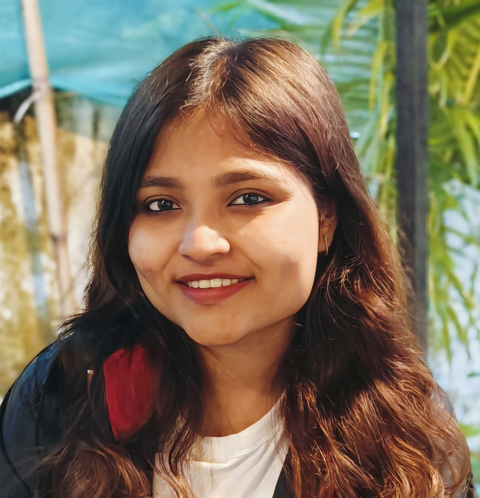

Priti Hazra

Summary
As a Frontend Developer with over 2 years of experience, I specialize in
creating intuitive and visually appealing websites. I have a strong
passion for both frontend development and design, consistently aiming to
incorporate unique features and functionalities that enhance user
experience.
Education
-
Bachelor's of Science in Information Technology - University of
Maharashtra (2016-2019)
Work Experience
- Associate Front End Developer - Brained
Oct 2023 - Nov 2024
-
Developed responsive web pages using HTML, Tailwind CSS ensuring
optimal performance and usability across mobile, tablet, and desktop
devices
-
Collaborated on UI design using Chakra UI, Material UI, and Element
enhancing visual appeal and user experience.
-
Utilized Redux for state management and API calls, streamlining data
fetching and improving application performance.
-
Translated wireframes and mockups into fully functional, interactive
web pages, resulting in a 15% increase in user engagement.
-
Collaborated with backend developers to ensure seamless integration of
front end and back-end components.
- UI Developer - Brained
March 2022 - Oct 2023
-
Interacted with clients for development, customization, and
implementation of web portals, successfully completing 5 major
projects.
-
Contributed to converting existing applications into responsive
designs, enhancing mobile usability.
- Reviewed user interfaces for usability and functionality.
Skills
- Languages: HTML, CSS, Javascript
- Framework/Libraries: React, Bootstrap, Tailwind CSS, Chakra-UI
- Design Tools: Figma, Adobe XD, CkEditor
- Version Control: Git, GitHub, GitLab
- Build Tools: NPM
Other